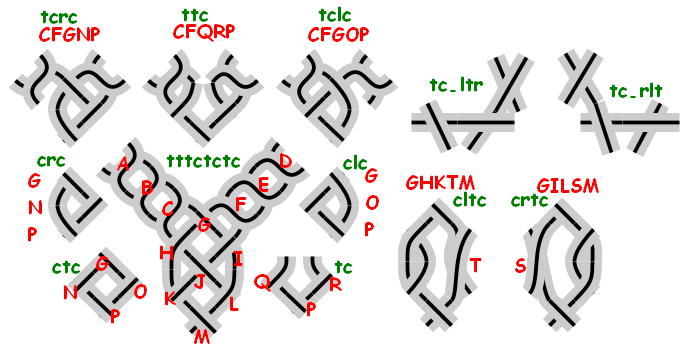

The diagram is a screen shot of showBasicStitches.xml annotated with id's of basicStitches.xml which is included in all diagrams.
In green lower case the id's of stitches, a red capital is the id of a cross or twist. Note that in one diagram all shown stitches should end with a cross (the open method), or start with a cross (the closed method).